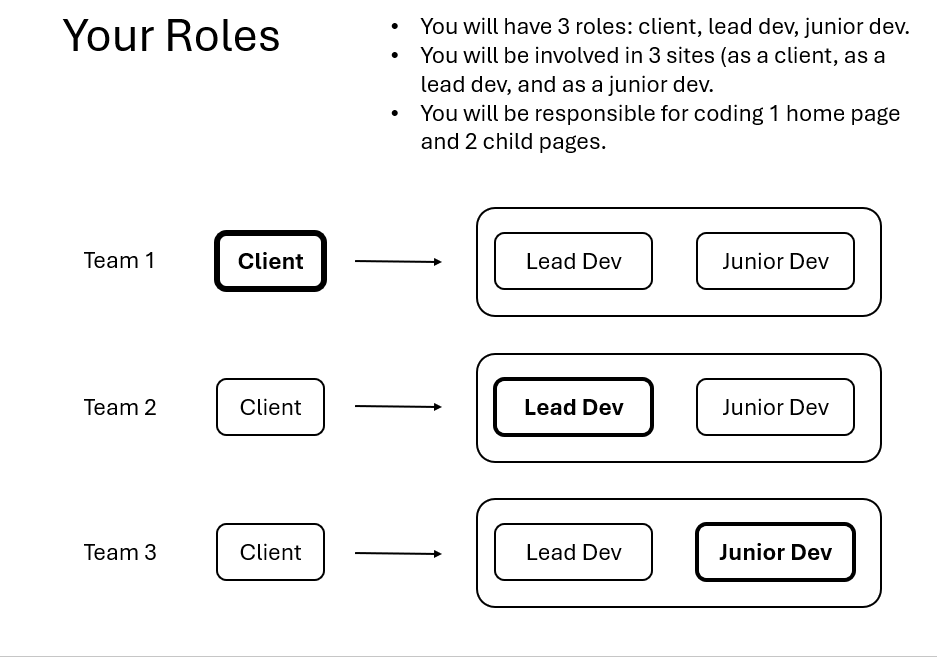

WEB Fundamentals
WDD 130
Client / Developer Team Project - Report
Finish up your client/developer final project by reporting on your experiences. Please reflect on your roles with each of your sites your were involved in.
Report Requirements
-
Add this report as a webpage in your wdd130 folder.
- Create an html page in your wdd130 folder named client_report.html
- Add a link on your main portal page that points to your client_report.html page. The text for the link should be "Client Report" and it should be easy to find on the page.
- Write your report in the body of client_report.html. Use proper heading (h1, h2, etc) and paragraph (<p>) elements to organize your report.
-
Client Report
- As a client answer the following questions:
- How did you decide what content and images to use for your site plan?
- How did you communicate with your developer? Were there any issues with communication?
- Did your developer meet your expectations for your site?
- What will you do differently next time you hire a team to do a project for you?
- Include a link to the site.
- As a client answer the following questions:
-
Lead Developer Report
- As the leader of a development team answer the following questions:
- How did you manage your development team and communicate the tasks to your junior dev?
- How did you communicate with your client? Were there any issues?
- How did you handle publishing your client's site and sharing it with the client?
- How was your experience with managing your site with GitHub?
- Include a link to the site.
- As the leader of a development team answer the following questions:
-
Junior Developer Report
- As junior developer, answer the following questions:
- How did you communicate with your team lead? Were there any issues?
- Did you know what was expected of you for the site?
- Were you able to contribute to your site?
- Did you run into any issues with GitHub and adding your changes to the site?
- Include links to the sites.
- As junior developer, answer the following questions:
-
General Experience and Reflections
- Answer the following general questions:
- What was the most challenging part of this project for you? Were you able to overcome it?
- What did you enjoy most about this project?
- What would you do differently if you could do the project again?
- Do you feel more confident in working on real-world projects after this experience? Explain.
- Answer the following general questions:
-
Submit
Submit the URL of your published portal page (which should have the updated link to your report).
Project Overview
Each student will have 3 roles:

- Client: As a client, your are responsible for the site plan and content creation of your personal website. You will hire 2 other students as your dev team to develop and code your site (a lead developer and a junior developer). You will communicate with the lead developer to make sure your site is completed on time.
- Lead Developer: As a lead developer you will be responsible creating the client's website. Your main job is to code the home page of the client's site. You will manage one other student (the junior dev) on your team who will code the two child pages. You will create and manage the GitHub repository where the client's website will be stored. You will need to give the other student access to the repository. You will be responsible for publishing the site online using GitHub pages. You will share the published website with the client on a regular basis.
- Junior Developer: As a junior developer you will be a member of one other dev team. You will be responsible for creating the two child pages for the client. You will need to communicate with your lead developer to know which pages to work on and how to access the site.